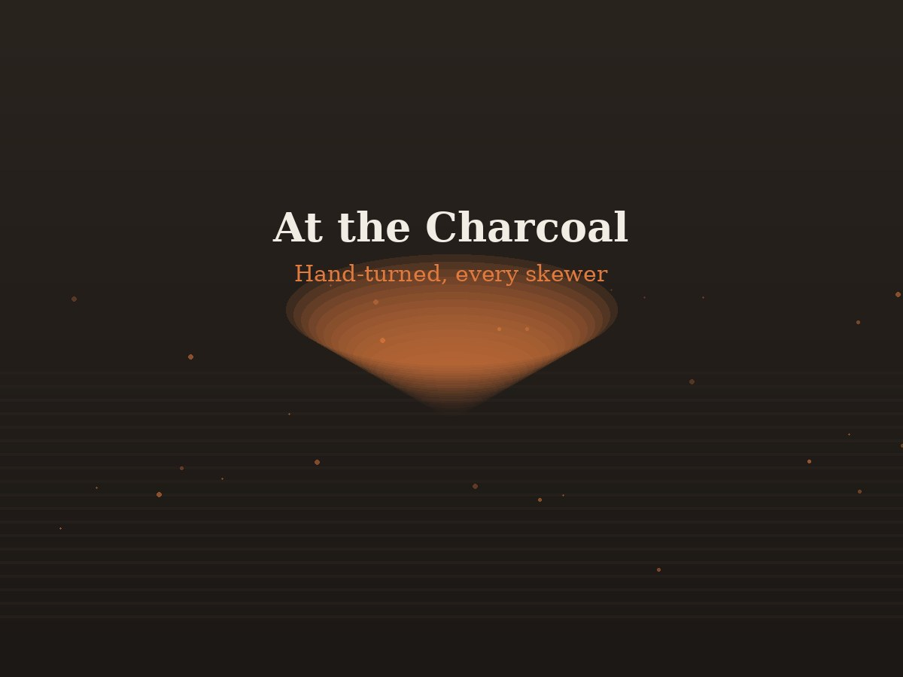
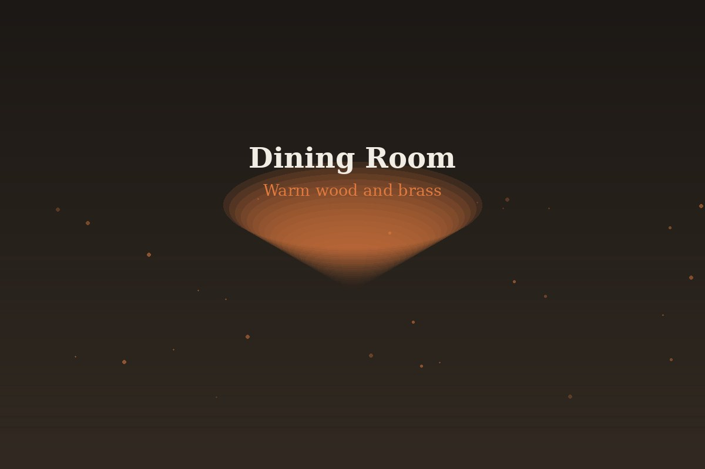

Zeytin opened on Canal View Road in 2021 with a single charcoal grill and a short menu. Five years later, the grill is still the heart of the room — we just got better at everything around it.
Zeytin means olive — in Turkish, and close to its cousins across the Levant. It's a small word that shows up in nearly every dish we serve: in the oil, the brine, the garnish. We named the restaurant after the ingredient that quietly does the most work.
Our founders trained in Levantine and Anatolian grill kitchens before bringing that style home to Faisalabad — built around one rule: nothing leaves the grill unless it's been over real charcoal.

The dining room is built around the grill station, not away from it — guests can watch skewers turn over charcoal from most tables. Warm wood, brass fixtures, low light in the evenings.
Eight more seats sit on a small outdoor terrace, open whenever the weather allows it.

No gas flame stands in for fire here. Every skewer, chop, and vegetable touches real charcoal before it reaches the table.
Nothing sits under a heat lamp. Tickets go to the grill when you order, which means a short wait for a hot plate.
Vegetarian and vegan options sit on the same menu as the grill, not a separate apologetic insert. Kids eat well too.